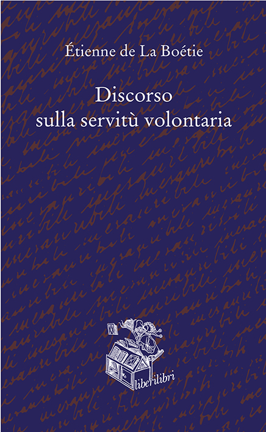
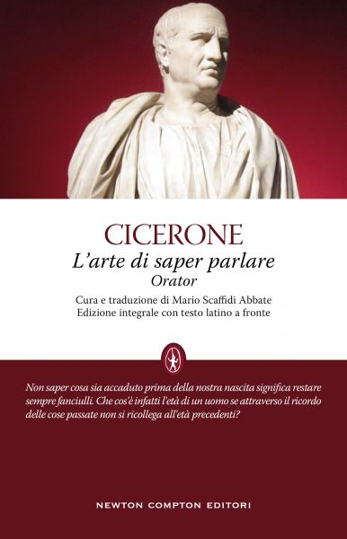
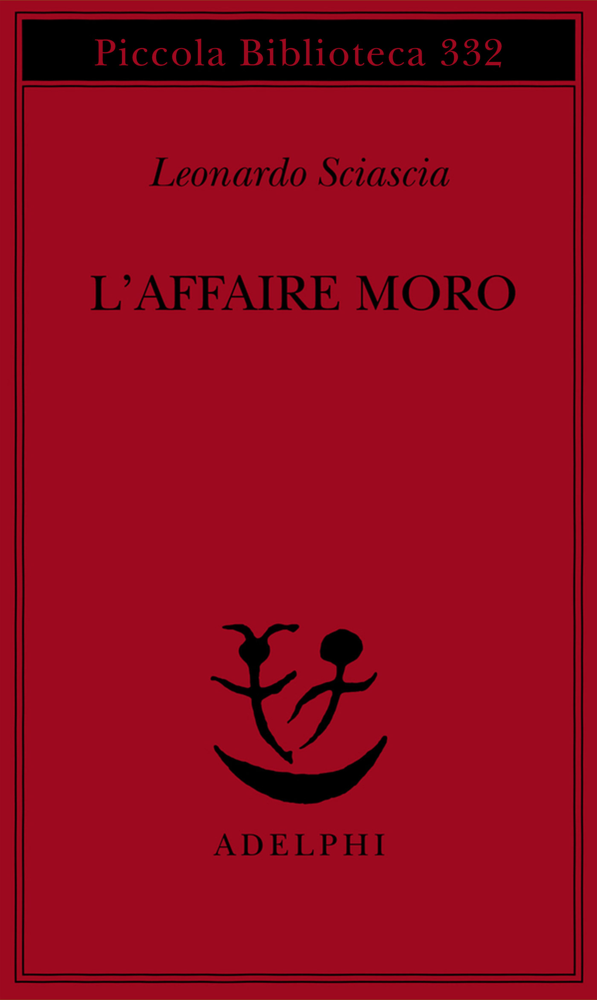

29:28 · 5 OPERE
Bernard-Henri Lévy: Il virus che rende folli.
Il filo del discorso
La presentazione del libro Il virus che rende folli di Bernard-Henri Lévy diventa un confronto sul rapporto fra emergenza, linguaggio pubblico e libertà di giudizio. Dr Divago apprezza nel saggio la possibilità di discutere l’attualità senza aderire a un messaggio uniforme. Dal prologo sul Bangladesh passa al Discorso sulla servitù volontaria di La Boétie, richiamato da Lévy per interrogare il consenso all’autorità.
Leggi la sintesi completaRiduci la sintesi
La manifestazione berlinese del primo agosto 2020 e i conteggi contrapposti dei partecipanti introducono poi una critica della rappresentazione mediatica. Il richiamo a Cicerone e un esperimento ideale sul metro di riferimento collegano memoria storica e capacità di valutare il presente. Nella parte centrale, L’affaire Moro di Sciascia e l’analogia dei lanci di una moneta servono al relatore per sostenere il proprio sospetto verso una spiegazione degli eventi basata soltanto sull’incompetenza o sulle coincidenze. Si tratta di un’argomentazione personale, non di una prova di coordinamento occulto. Il discorso passa quindi alla presenza degli intellettuali nei media e al desiderio di riconoscimento, con un aneddoto su un ospite televisivo non identificato. Il disagio della civiltà di Freud accompagna la riflessione sui conflitti della società. Nella conclusione, una storia della Grecia settecentesca dal nome non riconoscibile nella trascrizione introduce la corruzione politica e il processo a Socrate. Dr Divago torna così a La Boétie e alla cultura come risorsa per riconoscere il potere della comunicazione. Le valutazioni su pandemia, istituzioni e giornalismo rimangono attribuite al relatore e distinte dai dati sanitari e storici accertabili.
I libri nel discorso

Il virus che rende folli
Note sul riferimento
Copertina: La nave di Teseo · Le onde · 2020
Immagine autentica dell’opera, controllata visivamente; l’edizione di riferimento non è attribuita al filmato.
Autore e titolo sono annunciati; Questo virus che rende folli nel parlato corrisponde al titolo di catalogo Il virus che rende folli.

Discorso sulla servitù volontaria
Note sul riferimento
Copertina: Liberilibri · seconda edizione 2021 · traduzione Carla Maggiori
Copertina autentica del catalogo Liberilibri, ISBN della seconda edizione 2021. È un riferimento bibliografico successivo al contesto del video del 2020; non si identifica l’esemplare del filmato.
Étienne de La Boétie e Discorso sulla servitù volontaria sono espliciti e ritornano nella conclusione.

Orator (L’arte di saper parlare)
Identificazione probabile
Note sul riferimento
Copertina: Newton Compton · Classici 53 · cura e traduzione Mario Scaffidi Abbate, latino a fronte
Immagine autentica dell’opera, controllata visivamente; l’edizione di riferimento non è attribuita al filmato.
Cicerone e la parafrasi su chi non conosce ciò che precede la propria nascita rimandano all’Orator 120; titolo non annunciato.

L’affaire Moro
Note sul riferimento
Copertina: Adelphi · Piccola Biblioteca 332, 1994 · con aggiunta la relazione parlamentare
Immagine autentica dell’opera, controllata visivamente; l’edizione di riferimento non è attribuita al filmato.
L’affaire Moro e Sciascia sono annunciati nel confronto sulle coincidenze.

Il disagio della civiltà
Note sul riferimento
Copertina: Einaudi, 2010
Freud e Il disagio della civiltà sono espliciti.